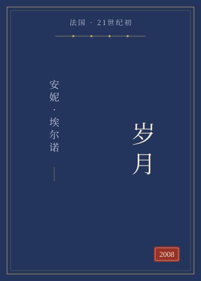
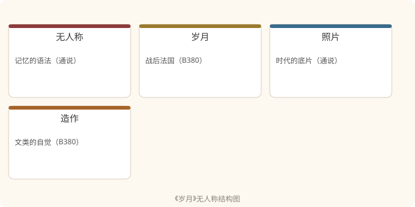

岁月
一、基本信息
| 作者 | 安妮·埃尔诺 |
|---|---|
| 成书/出版 | 2008年（Britannica B380：Les Années (2008)——'her masterpiece'——'a personal and collective history of postwar France'） Annie Ernaux — Encyclopaedia Britannica（百科全书） |
| 国别/地区 | 法国 |
| 时代 | 现当代 · 21世纪初 |
| 体裁 | 自传性叙事 |
| 语言 | 法语 |

《岁月》无人称结构图（主题·结构图）
二、创作背景
Britannica（B380）：'her masterpiece'——'a personal and collective history of postwar France'（战后法国的个人与集体史）——获杜拉斯奖与莫里亚克奖——英译2019入围布克。
Britannica（B380）：埃尔诺——'lightly fictionalized memoirs...written in spare, detached prose'——'revealing the artifice of her own genre'。
Britannica（B380）：2022诺奖——'courage and clinical acuity'。
三、内容脉络
（通说待核）'无人称'的岁月档案：照片、歌曲、广告与事件。
（通说待核）'拯救关于某物曾经存在的记忆'（不采为引文）。
四、主要人物表
| 人物 | 身份 | 说明 |
|---|---|---|
| '她'（无人称） | 记忆的主体 | （通说待核） |
五、主题与艺术特点
- '个人与集体的战后法国史'（B380）。
- '无人称自传'（通说待核）。
- '文类的造作'的自我揭示（B380：artifice of her own genre）。
六、影响与评论
- Britannica：2022诺奖——'courage and clinical acuity'（B380）。
Annie Ernaux — Encyclopaedia Britannica（百科全书） - Britannica：'her masterpiece'（B380）。
Annie Ernaux — Encyclopaedia Britannica（百科全书）
七、阅读建议
难点
- '无人称'的代词实验。
- 法国消费社会年表。
- 《岁月》中译名（《悠悠岁月》）待核。
- 法文原版。
埃尔诺集大成之作；与《一个男人的位置》对读。
八、待核实
- '无人称自传'说法待核。
- 2008年出版（Gallimard说）待核。
- 2025年伦敦西区舞台改编（B380）待核。
本页主要来源
安妮·埃尔诺的其他收录作品：岁月